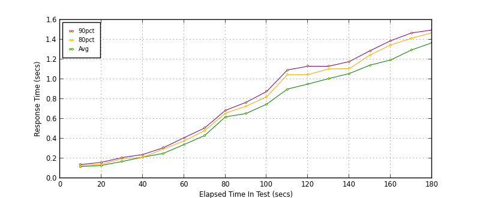

Performance Results Report
Summary
transactions: 5447
errors: 0
run time: 180 secs
rampup: 180 secs
test start: 2013-05-13 23:52:52
test finish: 2013-05-13 23:55:51
time-series interval: 10 secs
workload configuration:
| group name | threads | script name |
|---|
| user_group-1 | 40 | getBalance.py |
All Transactions
Transaction Response Summary (secs)
| count | min | avg | 80pct | 90pct | 95pct | max | stdev |
|---|
| 5447 | 0.100 | 0.676 | 1.106 | 1.252 | 1.365 | 6.412 | 0.489 |
Interval Details (secs)
| interval | count | rate | min | avg | 80pct | 90pct | 95pct | max | stdev |
|---|
| 1 | 141 | 14.10 | 0.100 | 0.117 | 0.129 | 0.138 | 0.146 | 0.172 | 0.014 |
| 2 | 299 | 29.90 | 0.101 | 0.129 | 0.139 | 0.160 | 0.171 | 0.224 | 0.020 |
| 3 | 359 | 35.90 | 0.107 | 0.169 | 0.198 | 0.209 | 0.251 | 0.452 | 0.044 |
| 4 | 387 | 38.70 | 0.120 | 0.212 | 0.210 | 0.239 | 0.263 | 5.351 | 0.368 |
| 5 | 417 | 41.70 | 0.154 | 0.250 | 0.294 | 0.308 | 0.329 | 0.384 | 0.046 |
| 6 | 370 | 37.00 | 0.220 | 0.340 | 0.376 | 0.409 | 0.425 | 5.334 | 0.266 |
| 7 | 330 | 33.00 | 0.268 | 0.431 | 0.480 | 0.508 | 0.529 | 0.653 | 0.059 |
| 8 | 285 | 28.50 | 0.415 | 0.619 | 0.656 | 0.685 | 0.727 | 5.563 | 0.423 |
| 9 | 293 | 29.30 | 0.473 | 0.653 | 0.727 | 0.766 | 0.794 | 0.922 | 0.080 |
| 10 | 288 | 28.80 | 0.585 | 0.748 | 0.823 | 0.876 | 0.924 | 1.100 | 0.096 |
| 11 | 256 | 25.60 | 0.609 | 0.900 | 1.046 | 1.093 | 1.143 | 1.432 | 0.142 |
| 12 | 271 | 27.10 | 0.657 | 0.951 | 1.046 | 1.131 | 1.222 | 5.875 | 0.335 |
| 13 | 277 | 27.70 | 0.805 | 1.006 | 1.104 | 1.131 | 1.210 | 1.356 | 0.111 |
| 14 | 288 | 28.80 | 0.847 | 1.058 | 1.106 | 1.178 | 1.213 | 6.230 | 0.529 |
| 15 | 286 | 28.60 | 0.874 | 1.142 | 1.245 | 1.288 | 1.315 | 6.137 | 0.441 |
| 16 | 290 | 29.00 | 1.072 | 1.195 | 1.345 | 1.389 | 1.411 | 2.539 | 0.135 |
| 17 | 282 | 28.20 | 1.087 | 1.294 | 1.413 | 1.467 | 1.493 | 1.786 | 0.128 |
| 18 | 288 | 28.80 | 1.145 | 1.368 | 1.469 | 1.497 | 1.554 | 6.412 | 0.323 |
Graphs
Response Time: 10 sec time-series

Response Time: raw data (all points)
Throughput: 5 sec time-series